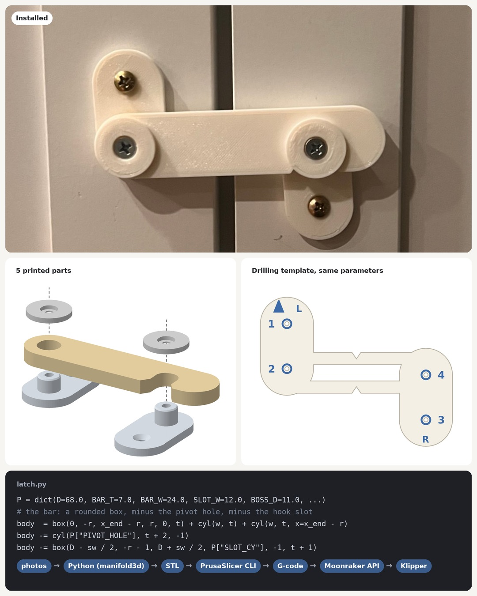
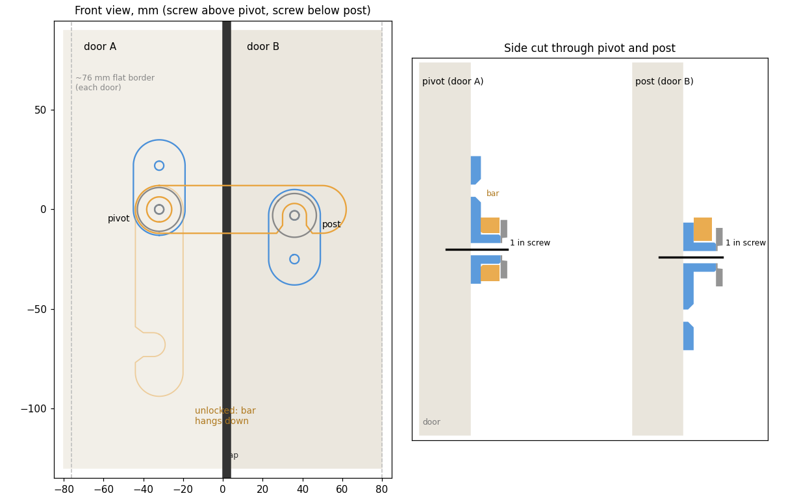

Pantry flip-bar lock
A toddler lock that ties two pantry doors together: a flip-down bar with a hook, a printed drilling template, all generated from one parametric Python model.
A 3D-printed flip-bar lock that ties two cabinet-style pantry doors together to keep a toddler out. The whole thing is parametric Python: every part and the drilling template come from one set of numbers.
Not a safety device. This is an untested hobby print, not a certified child-safety product. PLA can creep, crack or fail under load. Use it at your own risk, check it regularly, and don't rely on it to keep a child away from anything dangerous.

How it works
| Part | What it does |
|---|---|
| Base (left door) | Plate with a round boss the bar pivots on |
| Bar | Flips down; its downward-open hook drops over the post |
| Keeper (right door) | Plate with the post the hook sits on |
| Washers ×2 | Sit under the pivot and post screw heads and keep the bar on |
| Spacers (optional) | 1.5 / 3 mm, for doors whose fronts aren't level with each other |
| Template | 0.6 mm sheet: lines up on the gap, four holes to mark the screw positions |
- Locked: the bar lies across the gap with its hook over the post, so neither door can swing open.
- Unlocked: lift the hook off the post and let the bar hang down.
- No print-in-place hinges: the bar turns on a screw through a printed boss with about 0.5 mm of clearance, so nothing can fuse during printing.
- Strength: every part prints flat, so the load runs along the extrusion lines rather than across layer bonds.

Generate the parts
cd prints/pantry-flip-lock
python3 -m venv .venv && .venv/bin/pip install -r requirements.txt
.venv/bin/python latch.py # -> stl/base.stl, bar.stl, keeper.stl, washer.stl, shim_*.stl
.venv/bin/python template.py # -> stl/template.stl (+ docs/template.png)
Every dimension is a parameter in latch.py. Override any of them with JSON:
.venv/bin/python latch.py '{"BAR_T": 8, "D": 72}'
.venv/bin/python template.py # the template reads the same parameters, so it always matches
| Parameter | Default | Meaning |
|---|---|---|
D |
68 | Pivot-to-post distance (mm) |
BAR_T / BAR_W |
7 / 24 | Bar thickness / width |
SLOT_W |
12 | Hook slot width (the post is 11 mm, giving ±0.5 mm play) |
PLATE_T |
4 | Plate thickness |
SCREW_PITCH |
22 | Pivot/post to plate screw distance |
HOLE_D / CSK_D |
4.6 / 8.8 | Screw clearance hole / countersink (#8 or #6) |
render.py and exploded.py redraw the images in docs/.
Printing
PLA. Everything prints flat with no supports. - Lock parts: 0.28 mm layers, 4 perimeters, 30 % gyroid infill. About 2 h, 24 g for bar + base + keeper + 2 washers. - Template: 0.2 mm layers. About 16 min.
Hardware
Four flat-head wood screws, #8 (or #6): - 2 × ⅝" through the plates (template dots 1 and 3). - 2 × 1" through a washer and the pivot or post (dots 2 and 4).
This assumes doors at least ⅝" thick. Use pilot holes in MDF.
Install
- Tape the template across the gap with the V notches over the gap, the arrow up and L on the left door. Mark dots 1–4.
- Left door: screw 1 (⅝"), then the bar on the boss, a washer on top, and screw 2 (1").
- Right door: screw 3 (⅝"), snug but not tight. Hook the bar over the post so the keeper swings into line, then fit screw 4 (1") through the washer and post.
- If the bar rubs or sits crooked because one door sits forward, put a spacer under the lower plate.
How it was made
Designed with Claude Code as a parametric CSG model using manifold3d and trimesh. It was sliced with the PrusaSlicer CLI and printed on an Ender-3 Pro running Klipper, with jobs uploaded and monitored through the Moonraker API.
License
MIT. See LICENSE.